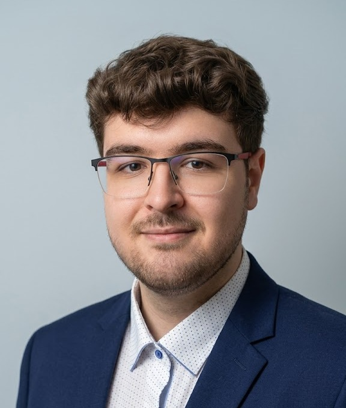

Sergio Carrascosa Medina
Programador Junior Full Stack

CONTACTO
EDUCACIÓN
Desarrollo de Apps Multiplataforma
IES Virrey Morcillo | 2024 - Presente
Media: 7,71
Sistemas Microinformáticos y Redes
IES Virrey Morcillo | 2022 - 2024
Media: 7,82
Habilidades
- Java
- HTML5 / CSS3 / JavaScript
- MySQL
- Linux / Docker / Redes
- Git / GitHub
- Montaje y Mantenimiento hardware
IDIOMAS
Español
Nativo
Inglés
Nivel B2 (First Certificate in English - Cambridge, Junio 2026)
PERFIL PROFESIONAL
Programador Junior apasionado por el desarrollo de software. Además de mi formación en Desarrollo Multiplataforma, administro mi propio servidor autoalojado y desarrollo proyectos por cuenta propia. Busco una oportunidad para aplicar mis habilidades en Java y Web en un entorno real, con iniciativa y muchas ganas de aprender.
EXPERIENCIA
Técnico de Sistemas (Prácticas)
IES Diego Torrente Perez | Mar 2024 - Jun 2024
Encargado del mantenimiento de los equipos informáticos del instituto.
- Resolución de incidencias de hardware y software.
- Instalación y configuración de redes locales.
- Soporte técnico a usuarios.
- Gestión de la pagina web
Desarrollador de Videojuegos (Prácticas)
Adina | Mar - Jun 2025 y Mar - Jun 2026
Colaboración en el desarrollo de un videojuego dentro de un equipo multidisciplinar junior.
- Programación de mecánicas de juego y lógica interna.
- Diseño, scripting y estructuración de niveles.
- Coordinación y trabajo en equipo para cumplir plazos.
OTROS
Carnet de conducir B + vehículo propio.